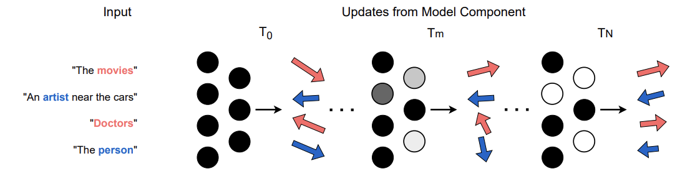
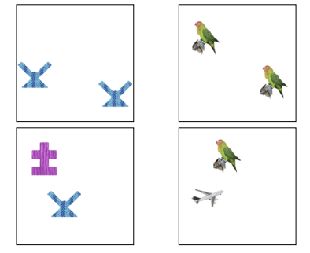
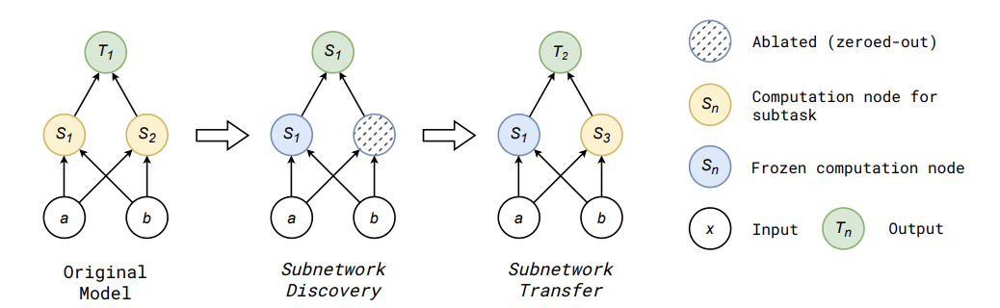
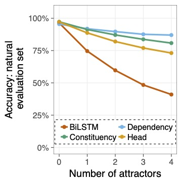
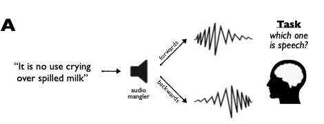

Uncovering Intermediate Variables in Transformers using Circuit Probing
Can we find subnetworks that compute high-level intermediate variables in transformers?
NeuroSurgeon: A Toolkit for Subnetwork Analysis
We present a python package that simplifies subnetwork analysis.

Break It Down: Evidence for Structural Compositionality in Neural Networks
Do neural networks self-organize into modular components when solving compositional tasks?

Deep Neural Networks Can Learn Generalizable Same-Different Visual Relations
Can vision models learn same-different relations that generalize to different datasets?

Instilling Inductive Biases with Subnetworks
Can we influence the solutions that neural networks learn by transferring subnetworks from trained models to randomly intialized models?

Representations of Syntax [MASK] Useful: Effects of Constituency and Dependency Structure in Recursive LSTMs
Which tree-structured neural network imparts the best inductive bias for syntactic agreement?

Can You Hear Me Now?: Sensitive Comparisons of Human and Machine Perception
How might researchers make fair comparisons between human and machine perception systems?